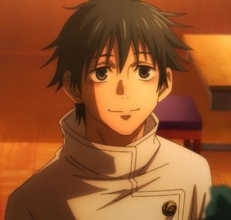
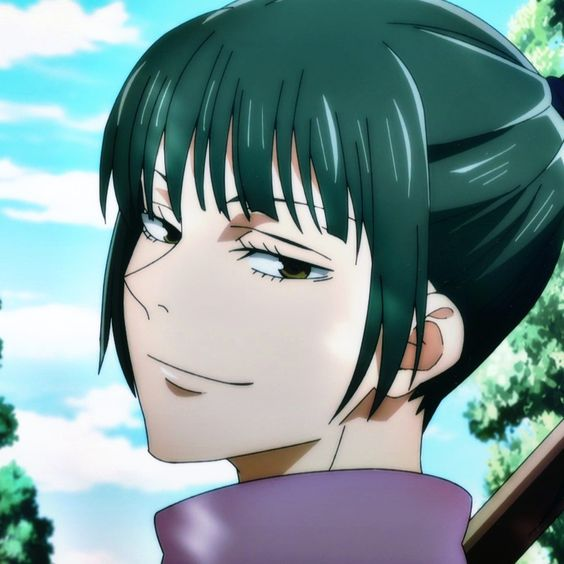
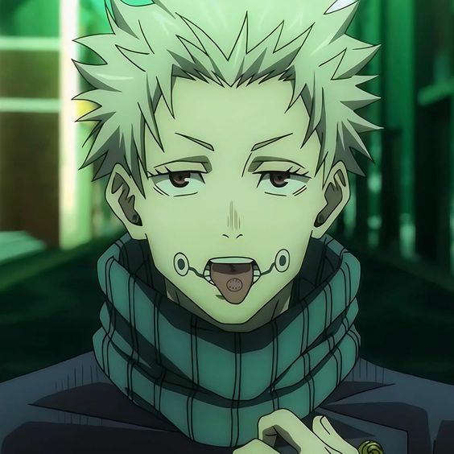

นักเรียนปี 2 โรงเรียนไสยเวทกรุงโตเกียว
1.ยูตะ โอคุทสึ
คุณไสย : คัดลอก,คำสาประดับพิเศษ ริกะ(วิญญาณคำสาปที่ไม่เกี่ยวข้องกับริกะ โอริโมโตะ)
ชายที่ดูมืดมน หน้านิ่งๆ เอกลักษณ์คือผมสีดำ สวมเสื้อสีขาว ปรากฎตัวครั้งแรกในมหาเวทย์ผนึกมาร 0 ในตอนแรก ยูตะเป็นเหยื่อของคำสาประดับพิเศษที่ชื่อริกะ โอริโมโตะ เพื่อนสมัยเด็กของเขาเอง สาเหตุมาจากตัวเขาเองที่ปฎิเสธการตายของริกะ โกโจรับผิดชอบคดีของริกะ กับพายูตะเข้าเรียนโรงเรียนไสยเวทย์โตเกียว สนิทกับมากิ อินุมากิ และแพนด้า หลังผ่านเรื่องราวมากมายจนคำสาปของริกะคลายออกแล้ว ยูตะยังคงมีพรสวรรค์ในด้านวิชาคุณไสย จากการฝึกฝนกับซาโตรุ และซาโตรุก็มองว่าเขามีพรสวรรค์พอจะเหนือกว่าเขา ปัจจุบันเป็นนักเรียนปีสอง และไปศึกษาต่อที่ต่างประเทศอยู่

2.เซนอิน มากิ
คุณไสย :ไม่มี แต่ชดเชยจากข้อจำกัดสวรรค์ให้มีพละกำลังเหนือมนุษย์
สาวสวมแว่นมาดคูล นิสัยรอบคอบ แต่ก็พึ่งพาได้และเป็นกันเองกับทุกคน เธอถูกวางให้เป็นผู้นำตระกูลเซ็นอินเพราะเป็นลูกคนโต แต่ด้วยความเพราะไร้พลังไสยเวท ทำให้เธอกับเมย์ ที่เป็นน้องสาวเธอ ถูกลดขั้นให้เป็นเพียงคนรับใช้ในตระกูล ก่อนที่ต่อมา เธอออกจากตระกูล ไปศึกษาที่โรงเรียนไสทเวทย์กรุงโตเกียว เนื่องจากเธอไม่มีพลังไสทเวทย์แต่เกิด จึงต้องอาศัยแว่นที่สามารถมองเห็นคำสาปได้ กับฝึกฝนอาวุธไสทเวทย์จนชำนาญ อยู่

3.โทเกะ อินุมากิ
คุณไสย :วาจาคำสาป พูดสิ่งใด จะเกิดเหตุการณ์ตามที่พูดเมื่อนั้น
ชายปิดปาก พูดน้อย เวลาสื่อสารกับใครมักจะพูดถึงส่วนประกอบของข้าวปั้น (เช่น แซลม่อน หรือมากุโร่ เป็นต้น)เนื่องจากคุณไสยของเขารวมอยู่ในเสียงของเขา
